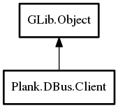

Client
Object Hierarchy:

Description:
public class Client : Object
Connects to a running instance of plank via DBus and provides remote interface to a currently runnning dock.
Content:
Properties:
Static methods:
Methods:
- public bool add_item (string uri)
Add a new item for the given uri to the dock
- public bool remove_item (string uri)
Remove an existing item for the given uri from the dock
- public int get_items_count ()
Returns the number of currently visible items on the dock
- public unowned string[]? get_persistent_applications ()
Returns an array of uris of the persistent applications on the dock
- public unowned string[]? get_transient_applications ()
Returns an array of uris of the transient applications on the dock
Signals:
Inherited Members:
All known members inherited from class GLib.Object
- @new
- newv
- new_valist
- get_type
- get_class
- @ref
- unref
- ref_sink
- weak_ref
- weak_unref
- add_weak_pointer
- remove_weak_pointer
- @get
- @set
- get_property
- set_property
- get_data
- set_data
- set_data_full
- steal_data
- get_qdata
- set_qdata
- set_qdata_full
- steal_qdata
- freeze_notify
- thaw_notify
- dispose
- constructed
- notify_property
- connect
- disconnect
- add_toggle_ref
- remove_toggle_ref
- bind_property
- notify
- ref_count